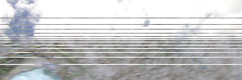
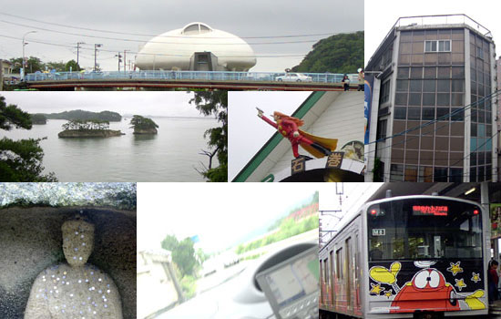
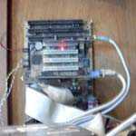
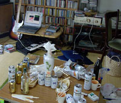
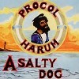

strange music page
* * * 2003.7
-2003.7.30 る*しろう
#FUJI ROCKの余韻中だったんですけど、MUMUとかを見に吉祥寺MANDALA-2へ。
いやーヤバかったです、何がヤバイって前から気になってた「る*しろう」ってバンド。とにかくキーボードの姉ちゃんの表情が面白くって（っていうか演奏も物凄く面白いんですけど）結構かわいい人がエレピでヘンテコなフレーズ弾きまくって、こんな感じで歌って、テンションすげー高くって。久々に衝撃的なモノを見ましただよ。
ちなみに、そのキーボードの金沢美也子さんは9/26 変拍子で踊ろうvol.9@吉祥寺STAR PINE'S CAFEで高円寺百景に参加とか。なるほど～な感じ。あと、9/9 変拍子ナイトvol.2@三軒茶屋グレープフルーツムーンとか。
♪植村昌弘/1999
-2003.7.29 泥濘と青空

#てなわけで行ってきました、FUJI ROCK FESTIVAL '03
といっても、2日目のチケットが無かったので、DCPRGもボブログ3世もビョークもペインキラーもASA-CHANG&巡礼もIGGYも見れなかった。
とりあえず宿はお願いしちゃったんで（山下さんどうもありがとうございます）土曜の夕方に苗場に行き、温泉に入ってちゃんこ鍋を食してました。遠くでベースの音だけがかすかに聴こえます。
金曜はとても雨が降っていて土曜も少し雨が降っていたので、大丈夫かと思ったんですけど日曜は晴れました。足元は写真のよーな状況でしたけど。
そんなわけで、詳細はこっち（て言うか写真整理するからちょっと待って）。ほぼホワイトステージとオレンジコートにしか居なかったです。OOIOOにクラムボンにROVOにRUINSにシカラムータに渋さ知らズにIMO。まともに見た外人はG.LOVEくらいだ。
渋さのステージセッティングが遅くて、全部見れずに会場を後にしたのがちょっと心残りだったけど、やっぱり楽しかったなーと。年に一回くらいはイイんじゃない？
♪鈴木さえ子/天国への螺旋階段
-2003.7.26 行ってきます。
#色々やらなきゃならない事が有るんですけど、とりあえずフジロック（最終日だけ）行ってきます。
矢口博康/さよならtodayを買いました。今回から自宅サーバの方に登録してみてるんですけど（遅いのはきっとDNSのせい、ちょっと待ってね）いかがなものでしょうか？見てる方にもツッコミ入れられるよーにしようかなぁとか。
♪矢口博康/さよならtoday
-2003.7.20-21 さて、ココはどこでしょう？
#みたいなクイズ番組有ったよなぁ、「ヒントでピント」だっけ？
宮城行ってきました、色々。天気悪かったけど。こんなのあった、まずかったけど。

♪opus avantra
-2003.7.19 佳村萌+勝井祐二+鬼怒無月+sachi-A

#見てきた、下北沢440。思ってたとおり良かった、何か幸せな感じ。レポ後日。
7/17は渋谷NESTでMACHINE AND THE SYNERGETIC NUTSを見てきた。MSNも良かったけど、ASLNが良かった。一応レポのようなもの。
右の写真は自宅鯖。ココのページを移行中で、今こんな感じ。
ここのサイトのHTMLをコンバートしてDBに入れたんだけど、あんまり規則的な書き方してなかったので大変面倒な事になってます。
明日からちょっと仙台。
♪arti+mestieri
-2003.7.7 TOUR DE FRANCE 2003
#出た、買った、CCCDだった、KRAFTWERKだし特別に赦そう。
♪KRAFTWERK/TOUR DE FRANCE 2003 VERSION 3
-2003.7.5 シールが
#こないだ電車で隣になったおっさんは（結構年季の入ったと思われる）携帯電話を買ったときに付いてる液晶画面を保護するシールを大層大事に貼りっぱなしで。それを見つけた俺は、剥がしたくて剥がしたくて剥がしたくてしょーがなかったんですけど、大人なんで我慢しました。
清水一登+鬼怒無月+太田恵資@大泉学園 in FとAbu Dhabi ver.00 (オパビニア,ヒデノブイトウ)行きました。
♪opabinia/pre-cambria dreamin'
-2003.7.1 MACHINE AND THE SYNERGETIC NUTS
 #えっと、Rotter's Paper（好みのベクトルがかなり似ていると思われ）にて珍しく大絶賛してた、MACHINE AND THE SYNERGETIC NUTSを渋谷のタワレコで買ってきました。
#えっと、Rotter's Paper（好みのベクトルがかなり似ていると思われ）にて珍しく大絶賛してた、MACHINE AND THE SYNERGETIC NUTSを渋谷のタワレコで買ってきました。
なんつーかもう格好イイのなんのって、もー。なんつーかX-Legged SallyとSoft Machine(3rd辺り)を足したよーな感じ、キーボードとか一瞬Jens Johanssonに似た雰囲気も。いやほんとに、紙ジャケなんか買ってる場合じゃ無いっすよプログレ様。（誰だよ）
でー、公式サイト見たら近々レコ発有るみたい。こなかりゆ見に行くつもりだったけど、やめてコッチに行きます。行くよ俺。
さっき珍しく「学校へ行こう」なんて見てたら、デコパチやられる渡辺満里奈が非常に可愛く見えた。
♪MACHINE AND THE SYNERGETIC NUTS
-2003.6.29 眠すぎる
#何でこんなに眠いんでしょうか？眠いというより意識混濁って感じです、ボケー。
で、相変わらず更新が滞ってるのは、自宅で立てたサーバの方でxoopsなんぞ試したりしててて、何故かログインでコケてて(Apache1.3.27+PHP4.3.3RC1+MySQL3.23.56+xoops1.3.10)、クラスの中身見てみたらセッションのメソッドが失敗してて・・・誰か知らんかのー？とか言ってみる。
あ、Matrix Reloadedを有楽町に見に行きました。うーん、1と3の繋ぎなだけなよな気がする。特に目新しい事無かったなぁ、ラスちょい前のシーンなんて2001年のパクリじゃないんだろーか？101匹エージェント大行進は映像的に可笑しかったけど。
銀座付近で何だかエライ人だかりが出来てると思ったら（後からわかったんだけど）tATuがカラオケしてたみたい。ネタだけで存在する芸人としては江頭2:50に似たベクトルを感じるけど。
あ、音楽ネタ。向島ゆり子/Right Here !!を明大前で買いました。（ちょっと前だけど）やっぱいーなぁ。あと、SILEX/alphabet（音響/ミニマル）とか中古で。
ちなみに今更PARLIAMENT/MOTHERSHIP CONNECTIONなんて買ったけど、ここのサイトの方向性とあまりに違うので省略。でもかっちょいいです。ピーファンクー！
♪PARLIAMENT/MOTHERSHIP CONNECTION
-2003.6.21 サイン=小堺=タンジェリンドリーム
#タイトル、ちょっと対抗してみました。（Tangerine Dreamかけようと思ってて忘れてた）
土曜にsasakidelicさんと前から「サイン波飲み会やろー」とか言ってたのを急遽実現させちゃいました。メンツはウツボカズラさん、山下スキルさん、風街まろんさん、sasakidelicさんとF嬢さま、そしてウチの弟。

何故かみんなで駅前の銀だこを買ってきてて、さながらたこ焼きパーティの様相を呈してきつつも、BGMは大友良英、Sachiko M.、吉田アミ、Hucker、Klaus Schulze、AUBE、ISO、竹村延和、ATOM HEART・・・(この辺まではサイン波っぽかった)・・・ルインズ波止場、ネタ説明の為にKING CRIMSONとKRAFTWERK、水森亜土、パスカルズ、はっぴぃえんどの変なミックスのヤツ、松前公高・・・そして深夜に突入すると何故かP-MODEL（前にプログレ鍋やった時も深夜にP-MODEL聴いた気がする）
自分は午前4時くらいに寝ちゃって、朝起きたら→みたいな感じ、誰もいなかったとゆー。
あ、買ったCDの紹介が最近滞ってます。Giulietta Machine買ったっす、良かった。あと明大前のモダーンミュージックで向島ゆり子さんのソロとMekong Zooを。
♪SILEX/Alphabet
-2003.6.19 夢亜
#今日気付いたんだけど、阪神のムーアのヘルメットに日本語でそー書いてあるのね。
なんか忙しかったり風邪ひいてたりとかでよーやく更新。あちこち更新しなきゃいけない所も有るんだけど・・・自宅サーバ立てるのはいつの日か・・・
♪PERE-FURU
-2003.6.14 また新宿
#下の続き、ちょっと寝て、仕事して、また新宿へ。らくだカルテット@新宿PIT-INNへ。
-2003.6.13 新宿
#えーと深夜、清水一登さんが出るイベントを見に新宿ロフトプラスワンへ。
カレー食ったよ、Ma*Toさんにも会ったよ。
-2003.6.8 西武池袋線は池袋駅の東口
#何度行っても東部東上線の方と間違えるのだが。
んで、行ってきました清水一登+向島ゆり子+今堀恒雄@大泉学園in F・・・・・全部インプロでした。あ、今堀さんのソロアルバムが8月くらいに出るとか。
♪I.S.O.
-2003.6.7 えーと
まごまご夜想楽のレポ、途中だけど。
あとこないだ買ったのはKOMEDA/Pop Pa SvenskaとAxel Krygier/Secreto y Malibuを。どちらもヘンテコポップス。
これから大泉学園の清水+今堀+向島へ行ってきます。
♪Axel Krygier/Amanece
-2003.6.5 日本奇怪音楽大観
#アクセス解析に台湾のサイトが引っかかって、ココなんだけど。まぁ中国語読めないんで、どんな事書いてあるのかはわかんないんですけど（CanterburyとかKing CrimsonとかSamla Mammas MannaとかKensoとかBikyoranとか書いてあるのでプログレ記事っぽい）自分のサイトにリンク張ってあって、中国語で「日本奇怪音樂大觀、分成前衛與實驗兩大部分。内容豐富。」だってさ。もしサイトの名前を変えることが有ったらコレ使おう。
一昨日の吉祥寺スターパインズカフェの「まごまご夜想楽」は色々聴けてかなりお得な感じでした。福原まりさんのピアノ曲が聴けたのが嬉しかったり。レポ後で。
今日は帰りがけに渋谷ディスクユニオンでCDを漁っていたら弟に遭遇。こんな所で会うなよ。
ヤツは一昨日は表参道CAYで大友良英とかのバンドを見てたようです。
♪Axel Krygier/Secreto y Malibu
-2003.6.1 しょっぱい犬
#えーと風邪治りました。あちこち痛いけど。
近所の古本屋で、「アーサー・Ｃ・クラーク/2010年宇宙の旅」（古本 \100）と「フィリップ・Ｋ・ディック/流れよわが涙、と警官は言った」（古本 \100）と「Jimi Hendrix/War Heroes」（中古CD \799)と「Procol Harum/A Salty Dog」（中古CD \799）
とりあえず「2010年」だけ読んだ、この水色の背表紙の本久々に買ったけど面白かった。このシリーズって後「2061年」と「3001年」だっけ？
まぁ人類2003年になっても未だに、地面這って生きてる訳だけど。別に宇宙いけなくてもいいけど、人類ってもーちょい進化しないのかな。
♪Jimi Hendrix/stepping stone
#しょっぱー。(2003.6.1)

- A Salty Dog
- The Milk Of Human Kindness
- Too Much Between Us
- The Devil Came From Kansas
- Boredom
- Juicy John Pink
- Wreck Of The Hesperus
- All This And More
- Crucifiction Land
- Pilgrims Progress
- Gary Brooker (vocals,piano,celeste,bells,harmonica,recorder,woods)
- Matthew Fisher (organ,vocals,acoustic guitar,marimba,recorder,piano)
- David Knights (bass)
- Barrie Wilson (drums,conga,tabla)
- Robin Trower (guitars,vocals,tambourine)
A&M RECORDS: CD-3123 (original release 1969)